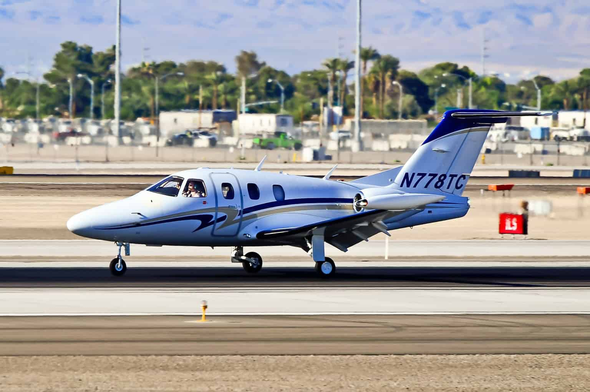
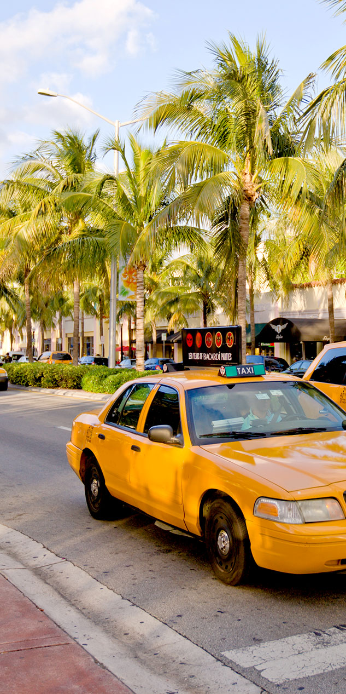
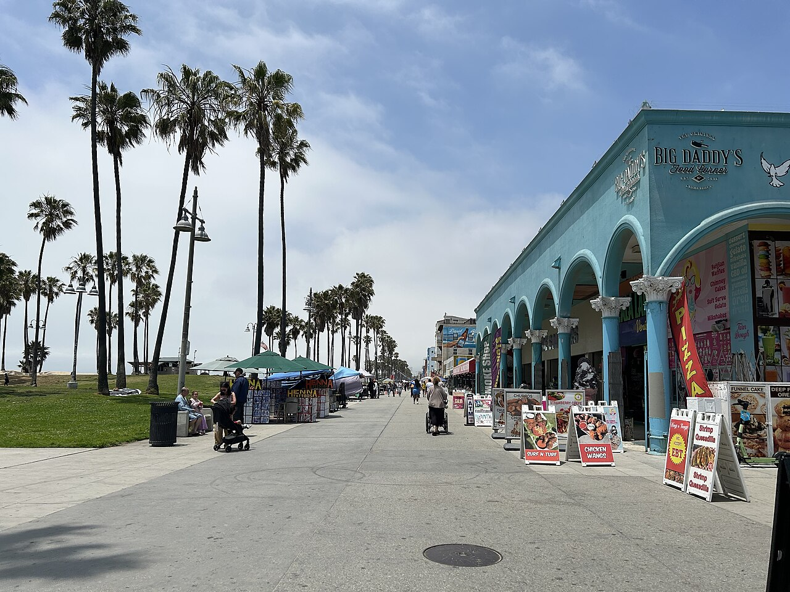

Transportation
Accessing the island
The island can be accessed by air or sea. A small cruise ship ports on the island once every week. Taniti also has a small airport where small airplanes can land. Feel free to contact Taniti's Department of Transportation at +0 (123) 456-7890 to receive information on which airlines fly to the island. They can also answer questions about the cruise line schedules. Read below to find out how to get around on the island.
Buses and taxis
In Taniti City buses and taxis are the most common form of transportation. Buses run from 5 am to 11 am although times can change for holidays. Contact the Taniti Department of Transportation at +0 (123) 456-7890 to confirm the right bus schedule. Taniti Taxi can be reached at +0(123) 111-1111.
Other transportation
If you're looking for a more private ride, car rentals are available by the airport. Just follow the signs and the sign up is easy. There are also private shuttles and taxis if you have a large party. Contact the Department of Tourism at +0 (123) 222-2222 to get more information. There are also trails and sidewalks across all of Taniti Island if you want to take a more adventurous approach.

(Del Coro, 2020)

(Yellow Taxi Miami, n.d.)

(DanielMichaelPerry, 2025)